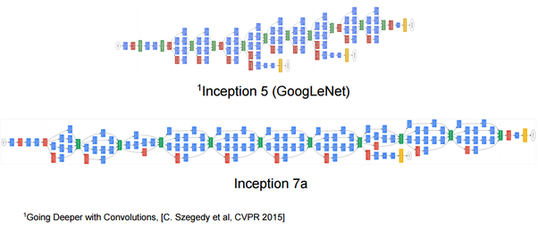

Comment rendre un ordinateur intelligent ?
(Introduction au deeplearning)
Ludovic L'HOURS github.com/madbrain
Exemple d'applications (1)
Recommandation de produits dans le E-commerce
(ie. Amazon)
Exemple d'applications (2)
Recherche d'objets similaires: Pinterest
Exemple d'applications (3)
Chatbots: TacoBot

Exemple d'applications (4)
Légende automatique d'images: NeuralTalk2
(plus d'exemples)Introduction
Rendre "intelligent" un ordinateur :
le domaine de l'Intelligence Artificielle
Apprentissage non-supervisé
- Nouvelles informations inférées uniquement à partir des données disponibles/mesurables
- Par exemple le partitionement (clustering)
Apprentissage supervisé
- Nouvelles informations inférées à partir des exemples étiquetés par des experts afin d'obtenir une prédiction/classification
- Estimation du prix d'un appartement
| Surface | Terrain | Pièces | Baignoires | Prix |
|---|---|---|---|---|
| 100 | 500 | 5 | 1 | 350000 |
| 180 | 1000 | 7 | 2 | 650000 |
| 50 | 0 | 3 | 1 | 220000 |
| 70 | 0 | 4 | 1 | ? |
Machine learning
- Utilisation d'algorithmes numériques pour apprendre à un ordinateur une tâche pour laquelle il n'a pas été explicitement programmé
- Apprentissage supervisé: l'apprentissage se fait à partir d'exemples fournis par des experts
Machine learning
Un modèle de calcul permet d'obtenir le résultat
Machine learning
Le modèle est fixe, les paramètres variables
Machine learning
Optimisation des paramètres grâce aux exemples
L'algorithme d'apprentissage
- Évaluer un modèle de calcul
- Mesurer l'erreur de l'évaluation
- Optimiser les paramètres
Modèle de calcul: le produit scalaire
\[\hat{y} = \begin{bmatrix}x_1\\x_2\\x_3\end{bmatrix} \cdot \begin{bmatrix}w_1\\w_2\\w_3\end{bmatrix} = x_1 w_1 + x_2 w_2 + x_3 w_3\]
- Permet un mélange pondéré des données en entrées
- La cuisine du mathématicien:
- les données sont les ingrédients
- les paramètres sont les quantités
- Simple, mais efficace!
Mesurer l'erreur: moindres carrée
$$erreur = \sum_{i}(y_i - \hat{y_i})^2$$
- Inventé au 18ème siècle par Gauss, a fait ses preuves!
- Le but est de minimiser l'erreur sur l'ensemble des données
Optimiser les paramètres
- Modèle de calcul : $\hat{y} = w_0x + w_1$
- $erreur_{i}(w_0, w_1) = (y_i - (w_0x_i + w_1))^2$
- Comment trouver les meilleurs paramètres $w_0$ et $w_1$ qui minimisent l'erreur sur nos données d'apprentissage ?
Optimiser les paramètre (2)
Optimiser les paramètre (2)
Optimiser les paramètre (2)
Optimiser les paramètre (2)
Optimiser les paramètre (2)
Optimiser les paramètres : Descente de gradients stochastique
$$W_{t+1} = W_t - \lambda\nabla erreur$$
- Pour chaque donnée d'apprentissage:
- calcul du gradient (pente) de l'erreur
- modification des paramètres dans la direction du gradient
- $ \lambda $: taux d'apprentissage
- stochastique = pour chaque point aléatoirement plutôt que sur la moyenne du gradient
Le python-code
from random import random, shuffle
data = [ (x/50.0, (2 * x/50.0 + random()))
for x in range(-50, 50) ]
shuffle(data)
learningRate = 0.01
w0 = 0
w1 = 0
for epoch in range(5):
for (x, y) in data:
f = w0 * x + w1
# erreur = (f - y)^2
# (u^2)' = 2uu'
gw0 = 2 * (f - y) * x
gw1 = 2 * (f - y)
w0 -= learningRate * gw0
w1 -= learningRate * gw1
print (w0, w1)
Démo Time: régression linéaire!
Généralisation pour n>=2
S'applique aussi aux images:
les pixels deviennent les données d'entrée
Naan, pas tout de suite!
Classification
- Précédemment on prédit une valeur, maintenant on prédit une catégorie
- Le résultat est la probabilité d'avoir reconu un 1
- => Régression logistique
Sigmoide
$$sigmoide(x) = \frac{1}{1 + e^{-x}}$$
- la valeur est transformée en probabilité (ie. $\in [0,1]$)
Mesure d'erreur de probabilité
$$erreur(p, q) = -p \log(q)$$
- Erreur mesurée par entropie croisée
- p: la "vrai" probabilité de l'expert
- q: la probabilité estimée
Régression logistique N>2 catégories
- La fonction Softmax remplace la sigmoïde
$$softmax_i(x) = \frac{e^{x_i}}{\sum_k e^{x_k}}$$
Démo Time: classification des chiffres!
Mesure de la performance
- Les données étiquetées sont divisées en deux parties:
- Les données d'apprentissage
- Les données de test pour mesurer la performance
- Les résultats corrects de classification sont comptabilisés
- Dans notre cas au mieux 87%
Réseau de neurones classique

- Imitation du fonctionnement du cerveau
- Les neurones sont interconnectés et forment des couches
- La sortie d'un neurone est non-linéaire
Fonctions non-linéaires
- Pourquoi: la composition de fonctions linéaires reste linéaire
- La non-linéarité est indispensable pour modéliser des fonctions complexes
- Plein de sortes: Tanh, Sigmoïde, ReLU
Classification de chiffres
- 784 neurones d'entrée (28x28)
- 625 neurones intermédiaires
- 10 neurones de sortie
- fonction non linéaire: sigmoïde
- performance: 89%
Classification moderne de chiffres
- 784 neurones d'entrée (28x28)
- 2 couches de 625 neurones intermédiaires
- 10 neurones de sortie
- fonction non linéaire: ReLU
- injection de bruit pendant l'apprentissage
- performance: 97%
Méthode traditionnelle de traitement d'images
- Extraction fixe de caractéristiques établie par un expert
- Classifieur avec apprentissage
Produit de convolution
- Permet d'extraire des caractéristiques des images
- Très générique: entièrement défini par son noyau (kernel)

Exemples de produits de convolution

Réseau de neurones convolutionnel

- Les paramètres des convolutions font parties de l'apprentissage
- Pooling: réduction de la taille de l'image (souvent fonction max)
- Indépendant de la localité
- A chaque couche, les données deviennent de plus en plus conceptuelles
Classification de chiffres
- entrée: image 28x28
- convolutions 3x3x1 + pooling => 32 images 14x14
- convolutions 3x3x32 + pooling => 64 images 7x7
- convolutions 3x3x64 + pooling => 128 images 3x3
- 1152(128x3x3) valeurs => 625 valeurs
- 625 valeurs => 10 catégories
- Performance: 99.9%
Évolution des réseaux
Toujours plus profond: DeepLearning!
DeepLearning
- Le coût d'apprentissage devient prohibitif:
- en CPU (GoogLeNet: 1.5Gops => 500ms @3GHz)
- en données (1M images => 5j)
- Solution: entrainement spécifique des dernières couches sur un réseau pré-entrainé
DeepDream
L'étude du cerveau numérique devient de l'art!

Traitement des langues naturelles
- Besoin de séquences temporelles: Réseau de neurones récurrent (RNN)
- Algorithme: LSTM
- Prétraitement: Word2Vec (mot $\to$ vecteur)

Le Datascientist
- Nombreux paramètres à définir
- Choix de l'algorithme
- Choix des paramètres
- Normalisation des paramètres

Les outils
- Services clouds : Google vision, Amazon, etc.
- Il faut être de la maison serpentard!
- TensorFlow, Caffe, Torch7
Les données
- Plus il y a de paramètres, plus il faut de données pour apprendre
- Il faut donc disposer de beacoup de données étiquetées
- Internet est un bon outils pour collecter beaucoup de données
- Les grosses entreprises sont très astucieuses pour obtenir des données étiquetées
- https://www.kaggle.com
Conclusion
- Algorithmes relativement anciens et pas si compliqués
- Disponibilité d'énormes volumes de données et de CPU => Essor du DeepLearning
- Qualité et quantité des données importantes pour obtenir de bons résultats
- => utilisation du crowd sourcing
Question Time?
https://madbrain.github.com/pres-deeplearning/